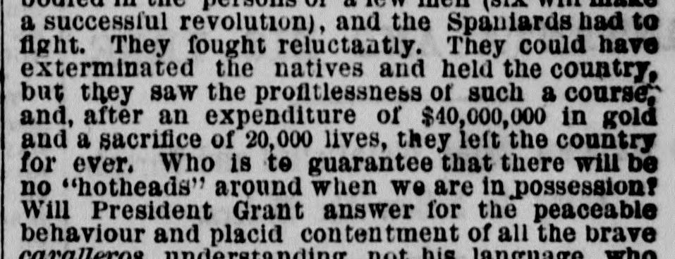

 See the full pageVer la página completa
See the full pageVer la página completa
PIEBALD REPUBLICS. Hayti and Dominica Socially and Politically Contrasted. The African Ahead of the Creole Democracy. POINTS OF SIMILARITY AND DIFFERENCE. Why the Republican Theory of Government Fails There. INTERVIEW WITH LUPERON. Preparations for Revolution in St. Domingo. UNITED STATES SPIES IN HAYTI. The Samana Bay Company in Peril from Invasion. AMONG THE VOUDOU WORSHIPPERS. High Times in the Sable Society of Port au Prince. THE MAGNIFICENT PRINCESS SOULOUQUE. A Leaf from the Arabian Nights. The Folly of Grant's Annexation Project.REPÚBLICAS ABIGARRADAS. Haití y Dominica contrastadas social y políticamente. El africano por delante de la democracia criolla. PUNTOS DE SEMEJANZA Y DIFERENCIA. Por qué fracasa allí la teoría republicana de gobierno. ENTREVISTA CON LUPERON. Preparativos para la revolución en Santo Domingo. ESPÍAS DE LOS ESTADOS UNIDOS EN HAITÍ. La Compañía de la Bahía de Samaná en peligro de invasión. ENTRE LOS ADORADORES DEL VOUDOU. Grandes tiempos en la sociedad negra de Port au Prince. LA MAGNÍFICA PRINCESA SOULOUQUE. Una página de las Mil y Una Noches. La locura del proyecto de anexión de Grant.
The New York Herald reported in April 1873 that annexing Santo Domingo would likely result in disappointment and questioned whether President Grant could guarantee the peaceable behavior of local inhabitants. The article argued that acquiring the island solely for a naval station is an extravagant burden and that annexation would only benefit New England manufactures if foreign commerce from Germany, France, and England were excluded.The New York Herald advirtió en abril de 1873 que la anexión de Santo Domingo depararía hondos desengaños, poniendo en duda que el presidente Grant pudiese responder por la subordinación pacífica de los pobladores insulares. La publicación arguyó que apropiarse de la isla con el único propósito de instalar una estación naval constituía un gravamen desproporcionado, y que la adhesión del territorio solo reportaría provecho a las manufacturas de Nueva Inglaterra en el caso de proscribir el comercio con Alemania, Francia e Inglaterra.
FULL TEXT:TRADUCCIÓN:
that for the favor of their representation flag we should be prepared to pay all their little debts, garrison their forts free of expense, send them the flower of our enterprising people, show them the blessings of civilization and the resignation of the Christian American spirit to yellow fever and early graves. The United States, as a nation, can gain nothing but trouble by the annexation of St. Domingo or of any West India island. These outlying gems, if ever grasped by American hands, will prove like Dead Sea apples, pleasant to the eye, but turning to ashes on the lips. Twelve years ago the Spaniards came, on the invitation of “the people,” and a large majority vote was given in favor of annexation. The Spaniards, by all accounts, did their best to conciliate; butque por el favor de su bandera de representación deberíamos estar preparados para pagar todas sus pequeñas deudas, guarnecer sus fuertes sin gasto alguno, enviarles la flor de nuestro pueblo emprendedor, mostrarles las bendiciones de la civilización y la resignación del espíritu cristiano estadounidense a la fiebre amarilla y a las tumbas tempranas. Los Estados Unidos, como nación, no pueden ganar nada más que problemas con la anexión de Santo Domingo o de cualquier isla de las Indias Occidentales. Estas joyas alejadas, si alguna vez son agarradas por manos estadounidenses, probarán ser como manzanas del Mar Muerto, agradables a la vista, pero que se convierten en cenizas en los labios. Hace doce años vinieron los españoles, por invitación de «el pueblo», y un voto de gran mayoría fue dado en favor de la anexión. Los españoles, según todos los informes, hicieron lo mejor que pudieron para conciliar; pero
THE SLEEPLESS SPIRIT OF REVOLUTIONEL ESPÍRITU INSOMNE DE LA REVOLUCIÓN
was abroad, as it will be for years to come, embodied in the persons of a few men (six will make a successful revolution), and the Spaniards had to fight. They fought reluctantly. They could have exterminated the natives and held the country, but they saw the profitlessness of such a course, and, after an expenditure of $40,000,000 in gold and a sacrifice of 20,000 lives, they left the country for ever. Who is to guarantee that there will be no “hotheads” around when we are in possession? Will President Grant answer for the peaceful behaviour and placid contentment of all the noble cavalleros understanding not his language, who have a grievance against the foreigners? Suppose my Dominican military friend, Don Cæsar de Pop-pycock, dislikes the disposition of spoils in the Custom House at Porto Plata and calls upon his friends in the mountains to get up a “revolution,” what is President Grant to do? Put him down by fire and sword and sow the dragon’s teeth which would make the soil prolific in something else besides palm and banana trees? Annexation is an admirable thing in the abstract, but applied to this island in a practical form will result in disappointment. If St. Domingo is needed for a naval station only, it is simple extravagance to entail so great a burden for such a relatively trifling object. It is buying a box of soap to wash a pocket handkerchief. Yes, it will have its merit after all. It will make a market for New England manufacturers, provided a law is passed excluding the competition of Germany, France and England. There is a wide field in the country for every sort of popular speculation. Let the West India Company have the whole island to themselves, if they want it, and all the circumjacent islands besides. Let another American company come down and rent Mancanile Bay, and in ten years the moral effect of these commercial enterprises will be more effectual in giving the country peace, economy, and good government, than United States bayonets and ships of war. The country will giveestaba suelto, como lo estará por años venideros, encarnado en las personas de unos pocos hombres (seis harán una revolución exitosa), y los españoles tuvieron que luchar. Lucharon renuentemente. Podrían haber exterminado a los nativos y mantenido el país, pero vieron la falta de provecho de tal curso, y, después de un gasto de $40,000,000 en oro y un sacrificio de 20,000 vidas, abandonaron el país para siempre. ¿Quién ha de garantizar que no habrá «cabezas calientes» alrededor cuando estemos en posesión? ¿Responderá el presidente Grant por el comportamiento pacífico y el contentamiento plácido de todos los nobles cavalleros que no entienden su idioma, que tienen un agravio contra los extranjeros? Suponga que mi amigo militar dominicano, Don Cæsar de Pop-pycock, detesta la distribución del botín en la Aduana de Puerto Plata y llama a sus amigos en las montañas para levantar una «revolución», ¿qué ha de hacer el presidente Grant? ¿Someterlo por el fuego y la espada y sembrar los dientes del dragón que harían el suelo prolífico en algo más además de palmeras y plátanos? La anexión es una cosa admirable en abstracto, pero aplicada a esta isla en forma práctica resultará en decepción. Si Santo Domingo se necesita solo para una estación naval, es simple extravagancia imponer una carga tan grande por un objeto relativamente tan insignificante. Es comprar una caja de jabón para lavar un pañuelo de bolsillo. Sí, tendrá su mérito después de todo. Hará un mercado para los fabricantes de Nueva Inglaterra, siempre que se apruebe una ley que excluya la competencia de Alemania, Francia e Inglaterra. Hay un amplio campo en el país para toda clase de especulación popular. Que la Compañía de las Indias Occidentales tenga toda la isla para sí, si la quiere, y todas las islas circundantes además. Que otra compañía estadounidense venga y alquile la Bahía de Mancanile, y en diez años el efecto moral de estas empresas comerciales será más eficaz para dar al país paz, economía y buen gobierno, que las bayonetas y los buques de guerra de los Estados Unidos. El país dará
FORTUNE AND HAPPINESS TO INDIVIDUALSFORTUNA Y FELICIDAD A LOS INDIVIDUOS
(if they live.) To us as a nation it is incapable of adding a particle of strength, but, on the contrary, would be forever a source of weakness. What(si viven.) Para nosotros como nación es incapaz de añadir una partícula de fuerza, sino, por el contrario, sería para siempre una fuente de debilidad. Qué
The New York Herald. New York, April 22, 1873.
See the original at the Library of CongressVer el original en la Biblioteca del Congreso
Also published as the New York Daily HeraldTambién publicado como New York Daily Herald
Published by: James Gordon BennettPublicado por: James Gordon Bennett
Edition: Morning Edition (Edition 1)Edición: edición de la mañana (edición 1)
Page: 6Página: 6
Frequency: daily (1840–1920)Frecuencia: diario (1840–1920)
Collection: Chronicling America, Library of CongressColección: Chronicling America, de la Biblioteca del Congreso
LCCN: sn83030313LCCN: sn83030313
ISSN: 2474-3224ISSN: 2474-3224
OCLC: 9467138OCLC: 9467138
Call Number: Newspaper E457.5 .N3Signatura (Call Number): Newspaper E457.5 .N3
Rights: public domain, according to the Library of CongressDerechos: dominio público, según la Biblioteca del Congreso